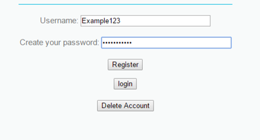
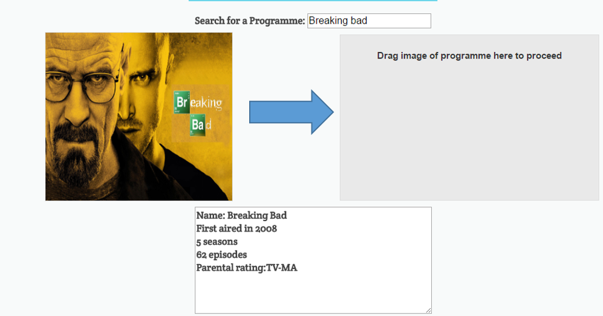
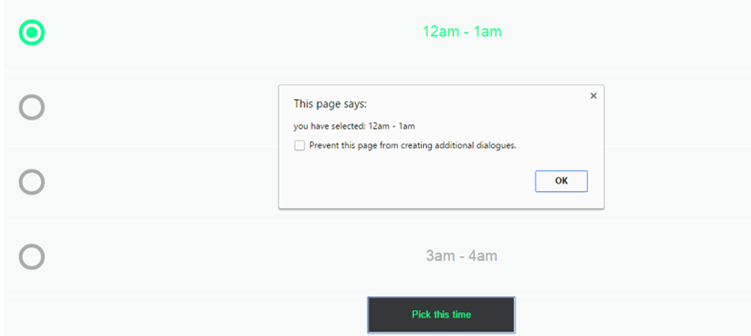

Featured Content
Hello and welcome to our site Please take the time to browse through our offering of programs. It is up to you to assign them to a suitable television channel as well as a timeslot.
How to Book:
Step 1: Login or Register.

Step 2: Go to the Program page

Step 3: Search for your Programme then drag image to the specified box.

Step 4: You will then be redirected to the channel page. Simply select the channel you want.

Final step: Select the time slot you want to be broadcasted. Then click "Pick this time" at the bottom of the page.
